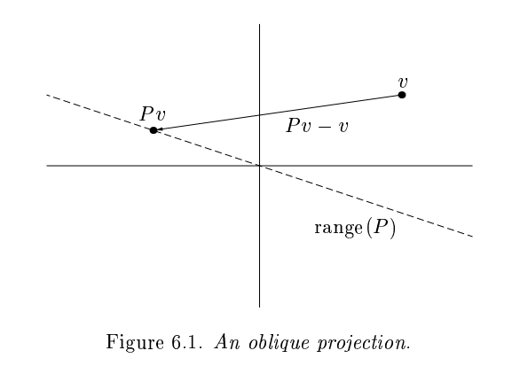
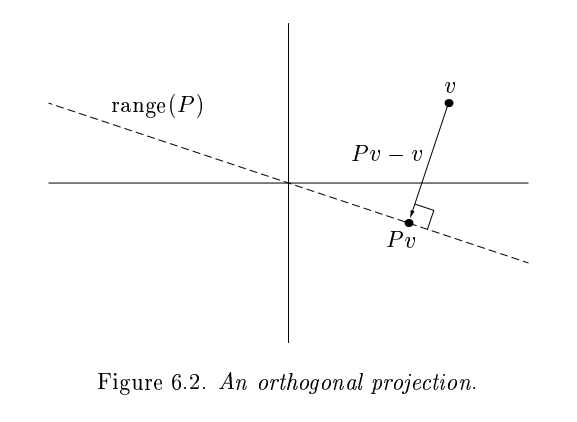
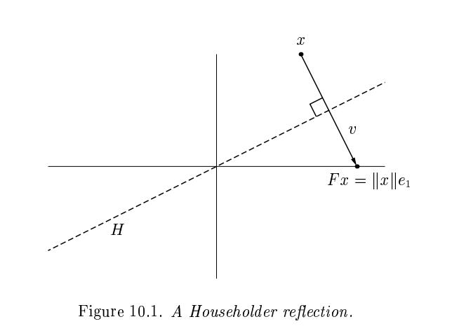
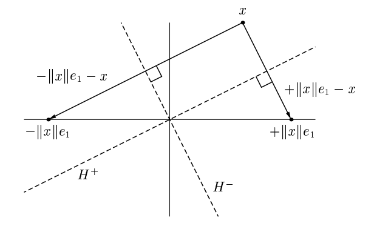

16) Householder QR#
Last time#
Gram-Schmidt orthogonalization
Classical vs Modified Gram-Schmidt
QR factorization
Today#
Recap from last time
Householder QR
using LinearAlgebra
using Plots
using Polynomials
default(linewidth=4, legendfontsize=12)
function vander(x, k=nothing)
if isnothing(k)
k = length(x)
end
m = length(x)
V = ones(m, k)
for j in 2:k
V[:, j] = V[:, j-1] .* x
end
V
end
vander (generic function with 2 methods)
1. Recap Gram-Schmidt orthogonalization#
For many applications, we find ourselves interested in the column spaces of a matrix \(A\):
The idea of QR factorization is the construction of a sequence of orthonormal vectors, \(q_1, q_2, \ldots\) that span these successive spaces.
Thus, suppose we want to find an orthogonal basis for the span of the columns of \(A\):
Given \(a_1, a_2, \dots\), we can construct vectors \(q_1, q_2, \ldots\) and entries \(r_{ij}\), by an iterative process of successive orthogonalization.
Gram-Schmidt with more parallelism#
We are performing the following (from right to left):
which can be factored in blocks to expoloit a bit of parallelism. Let’s call this classical Gram-Schmidt.
function gram_schmidt_classical(A)
m, n = size(A)
Q = zeros(m, n)
R = zeros(n, n)
for j in 1:n
v = A[:,j]
R[1:j-1,j] = Q[:,1:j-1]' * v
v -= Q[:,1:j-1] * R[1:j-1,j]
R[j,j] = norm(v)
Q[:,j] = v / R[j,j]
end
Q, R
end
gram_schmidt_classical (generic function with 1 method)
m = 20
x = LinRange(-1, 1, m)
A = vander(x, m)
Q, R = gram_schmidt_classical(A)
@show norm(Q' * Q - I) # really not orthogonal; unstable algorithm
@show norm(Q * R - A)
norm(Q' * Q - I) = 1.4985231287367549
norm(Q * R - A) =
7.350692433565389e-16
7.350692433565389e-16
Classical Vs Modified Gram-Schmidt#
Why does the order of operations matter?#
We are performing the following (from right to left):
which can be factored in blocks and is not exact in finite arithmetic.
Let’s look at this a bit more closely. In the classical Gram-Schmidt (CGS), we take each vector, one at a time, and make it orthogonal to all previous vectors. If an error is made in computing \(q_2\) in CGS, so that \(q^T_1q_2=\delta\) is small, but non-zero in finite arithmetic, this will not be corrected for in any of the computations that follow, and it will actually be propagated. In this case, \(v_3\) will not be orthogonal to \(q_1\) or \(q_2\).
Because of rounding errors, in classical Gram-Schmidt, \(Q_{k−1}\) does not have truly orthogonal columns. In modified Gram–Schmidt (MGS) we compute the length of the projection of \(w = v_k\) onto \(q_1\) and subtract that projection (and the rounding errors) from \(w\). Next, we compute the length of the projection of the computed \(w\) onto \(q_2\) and subtract that projection (and the rounding errors) from \(w\), and so on, but always orthogonalizing against the computed version of \(w\).
We can look at the size of what’s left over#
We project out the components of our vectors in the directions of each \(q_j\).
x = LinRange(-1, 1, 23)
A = vander(x)
Q, R = gram_schmidt_classical(A)
scatter(diag(R), yscale=:log10)
The next vector is almost linearly dependent#
x = LinRange(-1, 1, 20)
A = vander(x)
Q, _ = gram_schmidt_classical(A)
#Q, _ = qr(A) # try it with Julia's built-in
v = A[:,end]
@show norm(v)
scatter(abs.(Q[:,1:end-1]' * v), yscale=:log10)
norm(v) = 1.4245900685395503
Right-looking modified Gram-Schmidt#
Each outer step of the modified Gram-Schmidt algorithm can be interpreted as a right-multiplication by a square upper-triangular matrix.
function gram_schmidt_modified(A)
m, n = size(A)
Q = copy(A)
R = zeros(n, n)
for j in 1:n
R[j,j] = norm(Q[:,j])
Q[:,j] /= R[j,j]
R[j,j+1:end] = Q[:,j]'*Q[:,j+1:end]
Q[:,j+1:end] -= Q[:,j]*R[j,j+1:end]'
end
Q, R
end
gram_schmidt_modified (generic function with 1 method)
m = 20
x = LinRange(-1, 1, m)
A = vander(x, m)
Q, R = gram_schmidt_modified(A)
@show norm(Q' * Q - I) # better, in terms of orthogonality error
@show norm(Q * R - A)
norm(Q' * Q - I) = 8.486718528276085e-9
norm(Q * R - A) = 8.709998074379606e-16
8.709998074379606e-16
Classical versus modified?#
Classical
Really unstable, orthogonality error of size \(1 \gg \epsilon_{\text{machine}}\)
Don’t need to know all the vectors in advance
Modified
Needs to be right-looking for efficiency
Less unstable, but orthogonality error \(10^{-9} \gg \epsilon_{\text{machine}}\)
m = 20
x = LinRange(-1, 1, m)
A = vander(x, m)
Q, R = qr(A) # Julia built-in
@show norm(Q' * Q - I)
norm(Q' * Q - I) = 3.216006485393791e-15
3.216006485393791e-15
2. Householder triangularization#
Householder triangularization is numerically more stable than Gram-Schmidt orthogonaliztion, though it lacks the latter’s applicability as a basis for iterative methods. The Householder algorithm is a process of “orthogonal triangularization”, making a matrix triangular by a sequence of unitary matrix operations.
Gram-Schmidt constructed a triangular matrix \(R\) to orthogonalize \(A\) into \(Q\). Each step was an orthogonal projector, which is a rank-deficient operation.


Householder uses orthogonal transformations (reflectors) to triangularize.

The reflection, as depicted above by Trefethen and Bau (1999) can be written \(F = I - 2 \frac{v v^T}{v^T v}\).
The structure of the algorithm is
Constructing the \(Q_j\)#
Each of our \(Q_j\) will have the form
The two methods can be summarized as follows:
Gram-Schmidt: a triangular orthogonalization
Householder: an orthogonal triangularization
Adventures in reflection#
A = rand(4, 4); A += A'
v = copy(A[:,1])
@show norm(v)
v[1] -= norm(v)
v = normalize(v)
F = I - 2 * v * v'
B = F * A # we have zeroed-out all entries below the diagonal in the first column
norm(v) = 1.9622271842642167
4×4 Matrix{Float64}:
1.96223 1.73414 0.749038 2.27802
2.25826e-17 1.56876 1.04914 1.31944
6.98484e-17 -0.418156 1.00725 -0.0833319
9.57456e-18 1.14299 1.76795 1.27628
v = copy(B[2:end, 2])
v[1] -= norm(v)
v = normalize(v)
F = I - 2 * v * v'
B[2:end, 2:end] = F * B[2:end, 2:end] # we have zeroed-out all entries below the diagonal also in the 2nd column
B
4×4 Matrix{Float64}:
1.96223 1.73414 0.749038 2.27802
2.25826e-17 1.98552 1.63454 1.79475
6.98484e-17 0.0 1.59461 0.393569
9.57456e-18 0.0 0.162455 -0.0272828
Householder: A naive algorithm#
function qr_householder_naive(A)
m, n = size(A)
R = copy(A)
V = [] # list of reflectors
for j in 1:n
v = copy(R[j:end, j])
v[1] -= norm(v)
v = normalize(v)
R[j:end,j:end] -= 2 * v * (v' * R[j:end,j:end])
push!(V, v)
end
V, R
end
qr_householder_naive (generic function with 1 method)
m = 4
x = LinRange(-1, 1, m)
A = vander(x, m)
V, R = qr_householder_naive(A)
_, R_ = qr(A)
R_
4×4 Matrix{Float64}:
-2.0 0.0 -1.11111 0.0
0.0 1.49071 1.38778e-17 1.3582
0.0 0.0 0.888889 9.71445e-17
0.0 0.0 0.0 0.397523
How to interpret \(V\) as \(Q\)?#
The following two programs compute a matrix containing vectors that generate the Householder reflectors whose product is Q.
function reflectors_mult(V, x)
y = copy(x)
for v in reverse(V)
n = length(v) - 1
y[end-n:end] -= 2 * v * (v' * y[end-n:end])
end
y
end
function reflectors_to_dense(V)
m = length(V[1])
Q = diagm(ones(m))
for j in 1:m
Q[:,j] = reflectors_mult(V, Q[:,j])
end
Q
end
reflectors_to_dense (generic function with 1 method)
m = 20
x = LinRange(-1, 1, m)
A = vander(x, m)
V, R = qr_householder_naive(A)
Q = reflectors_to_dense(V)
@show norm(Q' * Q - I)
@show norm(Q * R - A);
norm(Q' * Q - I) = 3.7994490775439526e-15
norm(Q * R - A) = 7.562760794606217e-15
Great, but we can still break it#
A = [1. 0; 0 1.] # identity matrix, with canonical basis vectors in columns
V, R = qr_householder_naive(A)
(Any[[NaN, NaN], [NaN]], [NaN NaN; NaN NaN])
We had the lines
v = copy(R[j:end, j])
v[1] -= norm(v)
v = normalize(v)
What happens when R is already upper triangular?
In this case

In general, there are two possible reflections. For numerical stability, it is important to choose the one that moves \(x\) the largest distance, so that it is not too close to \(x\) itself.
In fact, suppose that in the above figure, the angle of \(H^{+}\) and the \(e_1\) axis is much smaller than \(x\) or \(|| x || e_1\). Thus, the calculation of \(v\) represents a subtraction of nearby quantities and will tend to suffer from cancellation errors. We can pick the sign of \(v\) so that we can avoid such effects by ensuring that \(||v||\) is never smaller than \(||x||\).
Householder: An improved algorithm#
function qr_householder(A)
m, n = size(A)
R = copy(A)
V = [] # list of reflectors
for j in 1:n
v = copy(R[j:end, j])
v[1] += sign(v[1]) * norm(v) # <--- here we pick the sign of v so that moves it the largest distance
v = normalize(v)
R[j:end,j:end] -= 2 * v * v' * R[j:end,j:end]
push!(V, v)
end
V, R
end
qr_householder (generic function with 1 method)
A = [1 0; 0 1]
V, R = qr_householder(A)
tau = [2*v[1]^2 for v in V]
@show tau
V1 = [v ./ v[1] for v in V]
@show V1
R
tau = [2.0, 2.0]
V1 =
[[1.0, 0.0], [1.0]]
2×2 Matrix{Int64}:
-1 0
0 -1
Householder is backward stable#
m = 40
x = LinRange(-1, 1, m)
A = vander(x, m)
V, R = qr_householder(A)
Q = reflectors_to_dense(V)
@show norm(Q' * Q - I)
@show norm(Q * R - A);
norm(Q' * Q - I) = 5.949301496893686e-15
norm(Q * R - A) = 1.2090264267288813e-14
A = [1 0; 0 1.]
V, R = qr_householder(A) # we don't get NaNs anymore
qr(A) # Julia built-in
LinearAlgebra.QRCompactWY{Float64, Matrix{Float64}, Matrix{Float64}}
Q factor: 2×2 LinearAlgebra.QRCompactWYQ{Float64, Matrix{Float64}, Matrix{Float64}}
R factor:
2×2 Matrix{Float64}:
1.0 0.0
0.0 1.0
Orthogonality is preserved#
x = LinRange(-1, 1, 20)
A = vander(x) # [1 | x | x^2 | ... x^19]
Q, _ = gram_schmidt_classical(A)
@show norm(Q' * Q - I)
v = A[:,end]
@show norm(v)
scatter(abs.(Q[:,1:end-1]' * v), yscale=:log10, title="Classical Gram-Schmidt")
norm(Q' * Q - I) = 1.4985231287367549
norm(v) = 1.4245900685395503
Q = reflectors_to_dense(qr_householder(A)[1])
@show norm(Q' * Q - I)
scatter(abs.(Q[:,1:end-1]' * v), yscale=:log10, title="Householder QR") # they are less linearly dependent, i.e., more linearly independent
norm(Q' * Q - I) = 3.840520021608235e-15
Summary:#
Classic Gram-Schmidt: Usually very poor orthogonality.
Modified Gram-Schmidt: Depends upon condition of \(A\). Fails completely when \(A\) is singular.
Householder triangularization: Always good orthogonality and backward stable.